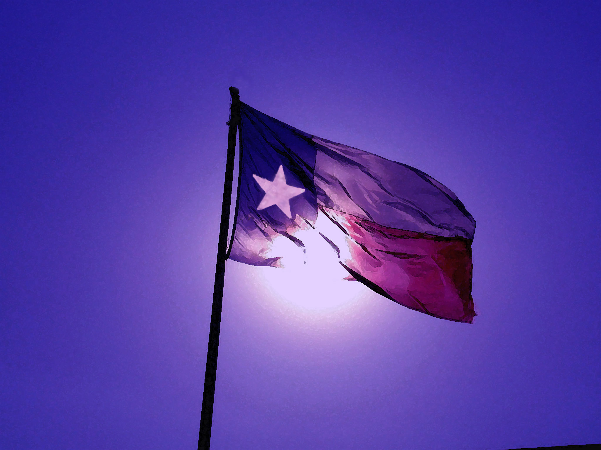

HTML
I have always been curious about how websites work behind the scenes. Learning HTML gave me the opportunity to finally understand how websites are structured and built.
Web Design • Creativity • Curiosity
Hello! I am currently a student at Dallas College pursuing an Associate Degree in Web Design. I decided to return to school because I wanted to build a new career that would be challenging, creative, and exciting. I have always enjoyed working with computers and am excited to develop a career around that interest.
When I'm not focusing on school, I love to create things. Baking, writing, and painting are a few of the things that bring me joy. I also enjoy reading, watching movies, listening to music, and dancing around the house like no one is watching—my dog does judge me, though!
I have lived in Texas for over twenty years and have loved it. However, I'm in an era of trying new things in a big way, and I figured, why not have a new state to go along with my new career? I'm excited about the possibilities ahead and am looking forward to the adventure.


In another time and place, I am a brave explorer in a fantasy world—I conquer evil-doers, sweep gallant princes off their feet, and befriend fiery dragons! In this world, however, I am just a girl who loves to visit Renaissance festivals.
My favorite festival to visit is the Scarborough Renaissance Festival in Waxahachie, Texas. I go every year and usually visit more than once. There are so many different types of shows and shops, not to mention the variety of food; there really is something for everyone!
It's an experience I look forward to every year!

I have always been curious about how websites work behind the scenes. Learning HTML gave me the opportunity to finally understand how websites are structured and built.
CSS has allowed me to explore the creative side of web design. I enjoy experimenting with layouts, typography, colors, and visual details to create a more engaging experience.
I am continuing to build my skills in JavaScript and learning how code can bring websites to life through interaction and functionality.
In high school, I took a very basic web development class, but we did not learn any HTML coding, which I found disappointing. When I finally had the opportunity to learn how to build my own websites at Dallas College, I was excited to get started.
I have enjoyed learning web development and design so much that I decided to pursue Web Design at Dallas College. I am currently building my skills through hands-on projects that allow me to put what I learn into practice.
As a student, I have learned the basics of HTML, including semantic structure, linking images and websites, and using CSS to control the presentation and layout of a page. I am continuing to build my skills and look forward to learning more web development techniques and programming languages.
2025 – 2027
Web Development — Associate Degree
I am excited to continue building my skills and exploring what I can create with them. I would love to eventually create a space to collect my writing and help others build websites for their own creative projects and businesses.